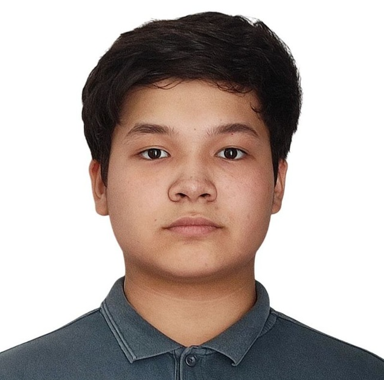

Yeraly Gainulla 
Aspiring AI engineerStudent at Aqbobek International School
Aktobe, Kazakhstan
Email: eralygainulla [at] gmail [dot] com

|  |
Yeraly Gainulla
Aspiring AI engineer |
I am an aspiring Machine Learning Engineer and high school student at Aqbobek International School, Aktobe in Kazakhstan. I am currently learning machine learning and deep learning from the ground up through hands-on projects and self-directed study. My main interests lie in Natural Language Processing.
Right now, I am focused on learning Python, linear algebra, and fundamental machine learning algorithms. I am also working on small projects in computer vision and natural language processing as part of my learning journey. In parallel, I am preparing for AI and ML olympiads to deepen my understanding and challenge myself through problem solving.
Against Toxic Telegram – Against Toxic Telegram Bot is a Telegram bot designed to automatically analyze and delete toxic messages in groups and channels. [repo]
E-sense.cv – A computer vision startup, app and a Telegram bot designed to help parents monitor their children's emotional state. [repo]
KazBERT – BERT-based model fine-tuned for Kazakh language tasks. The model is trained using Masked Language Modeling (MLM) on a Kazakh, Russian, English text corpus. [repo]
Skin-AI – Skin-AI is a deep learning model based on ConvNeXt, optimized for skin disease classification using PyTorch Lightning. [repo]